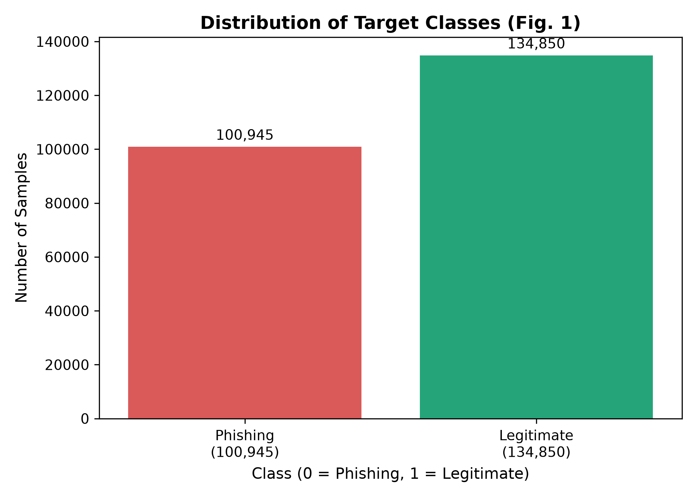
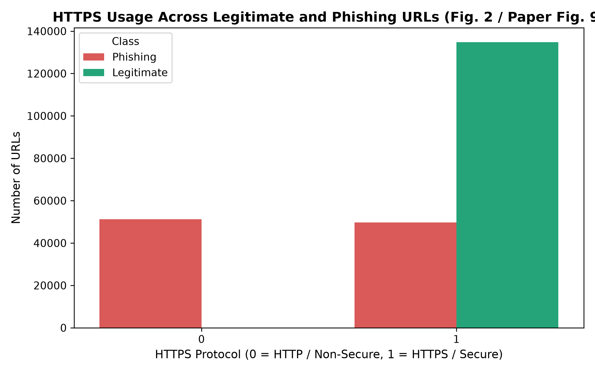
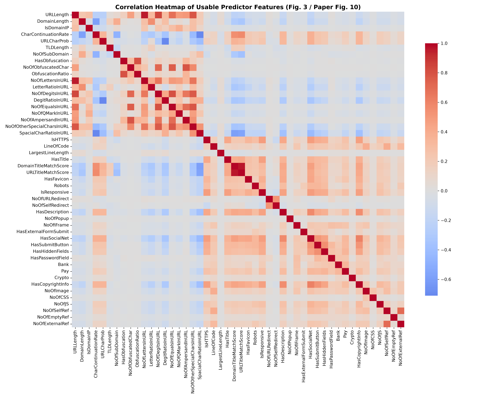
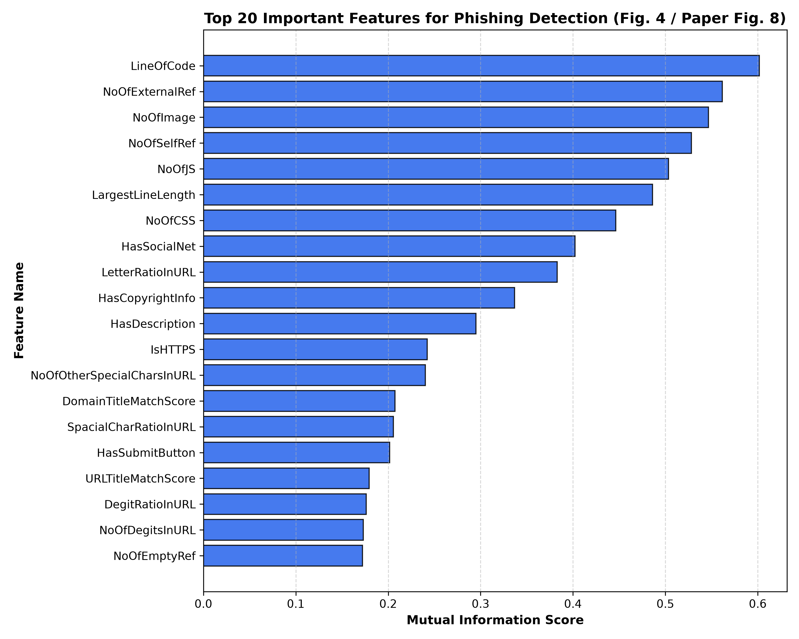
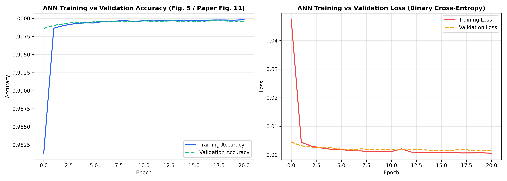
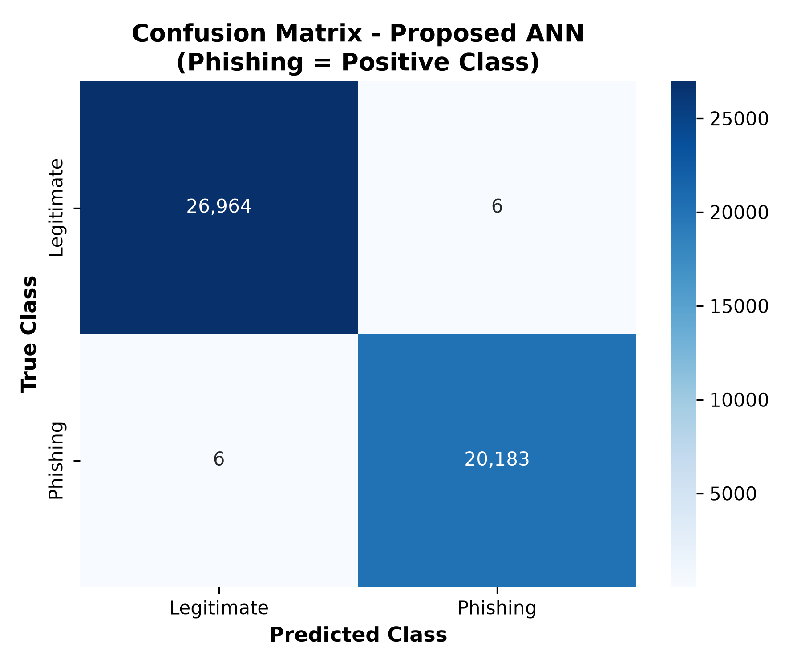

Machine Learning Project · Results Report
Phishing detection, measured.
A browser-readable summary of the trained ANN, baseline comparisons, ablation study, and robustness experiments generated by this project.
ANN accuracy99.975%
ANN F1-score99.970%
ANN ROC-AUC0.999997
Model comparison
| Model | Accuracy | Precision | Recall | F1-Score | ROC-AUC | TP | TN | FP | FN | Training_Time_s |
|---|---|---|---|---|---|---|---|---|---|---|
| Logistic Regression | 99.881% | 99.891% | 99.832% | 99.861% | 0.999991 | 20155 | 26948 | 22 | 34 | 0.489966 |
| Decision Tree | 99.847% | 99.792% | 99.851% | 99.822% | 0.998478 | 20159 | 26928 | 42 | 30 | 5.098547 |
| Random Forest | 99.972% | 99.985% | 99.950% | 99.968% | 1.000000 | 20179 | 26967 | 3 | 10 | 7.774452 |
| Support Vector Machine (LinearSVC) | 99.964% | 99.970% | 99.946% | 99.958% | 0.999995 | 20178 | 26964 | 6 | 11 | 1.686204 |
| XGBoost | 99.985% | 99.990% | 99.975% | 99.983% | 1.000000 | 20184 | 26968 | 2 | 5 | 2.750037 |
| Proposed ANN (30 Features) | 99.975% | 99.970% | 99.970% | 99.970% | 0.999997 | 20183 | 26964 | 6 | 6 | 38.382236 |
Robustness summary
| Experimental_Evaluation | Accuracy | F1_Score | ROC_AUC | Scope_and_Notes |
|---|---|---|---|---|
| Stage 1 Baseline: Proposed ANN (Single 80/20 Split, 30 MI Features) | 99.966% | 99.960% | 0.999996 | Full feature space (lexical + HTML/DOM), single split |
| Part A: 5-Fold Stratified CV (Proposed ANN, Mean ± Std) | 99.975% ± 0.0056% | 99.971% ± 0.0066% | 0.999997 ± 0.000002 | Full feature space, fresh per-fold scaling & MI selection |
| Part B1: Cross-Dataset Common Features (PhiUSIIL Test Split) | 93.197% | 92.154% | 0.981094 | 8 common alignable features evaluated in-dataset |
| Part B2: Cross-Dataset External Validation (UCI Dataset) | 47.445% | 62.603% | 0.583023 | External generalization on Mohammad et al. (11,055 rows) |
| Part C: URL-Only Scope Ablation (20 Pre-Crawl Features) | 99.775% | 99.737% | 0.998680 | Pre-crawl lexical/host features only, zero webpage fetching |
Cross-dataset evaluation
The external UCI result is shown separately because the feature definitions and data distribution differ from PhiUSIIL.
| Evaluation_Setting | Accuracy | Precision | Recall | F1 | ROC-AUC |
|---|---|---|---|---|---|
| PhiUSIIL Test Split (In-Dataset) | 93.197% | 91.023% | 93.313% | 92.154% | 0.981094 |
| UCI External Dataset (Cross-Dataset) | 47.454% | 45.719% | 99.306% | 62.612% | 0.535979 |
Feature-selection ablation
| Configuration | Features | Accuracy | Precision | Recall | F1-Score | ROC-AUC | Training_Time_s |
|---|---|---|---|---|---|---|---|
| ANN without feature selection | 48 | 99.972% | 99.965% | 99.970% | 99.968% | 0.999995 | 30.458805 |
| ANN with Mutual Information | 30 | 99.975% | 99.970% | 99.970% | 99.970% | 0.999997 | 38.382236 |
Generated figures





